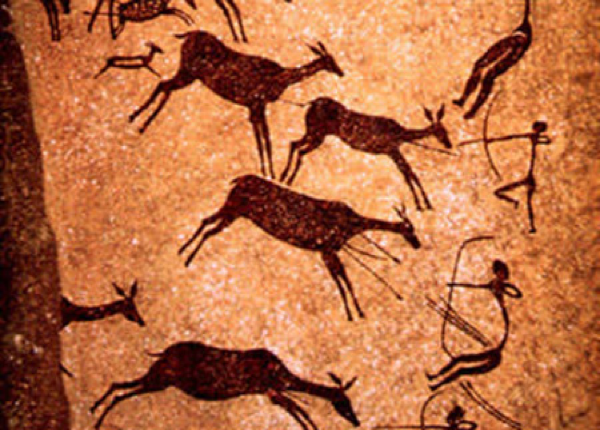
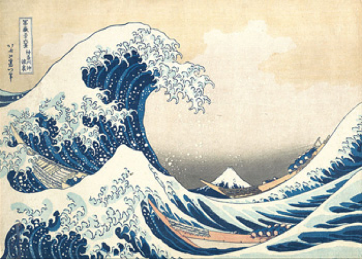
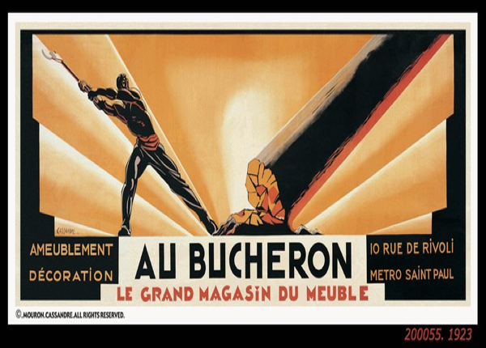
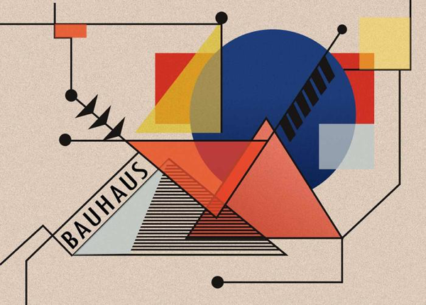
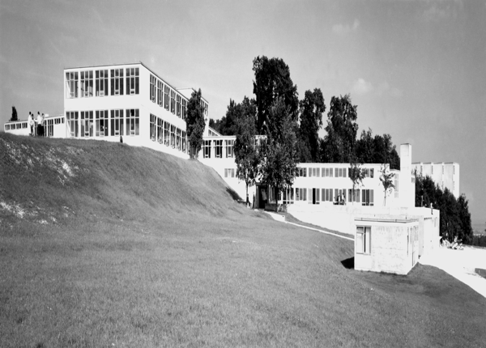
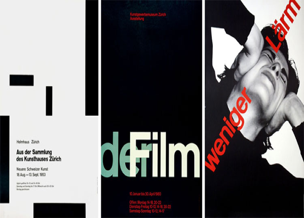
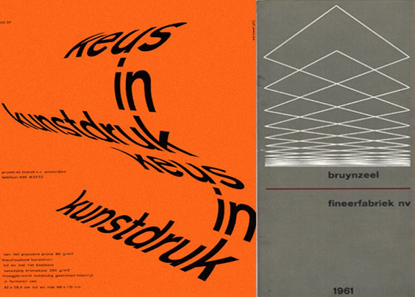
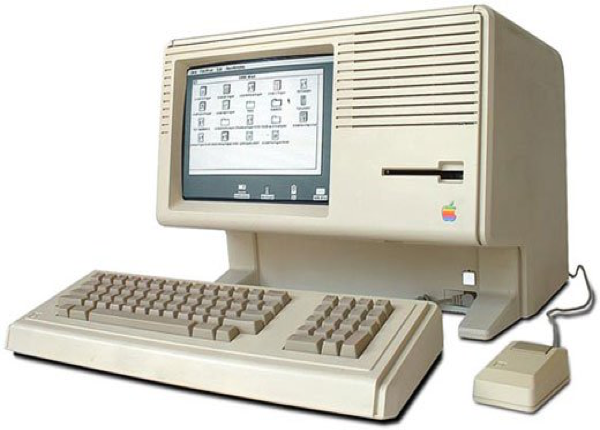
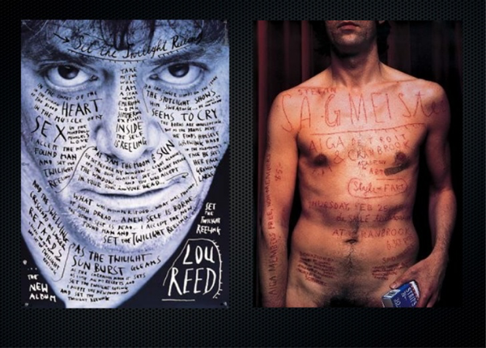
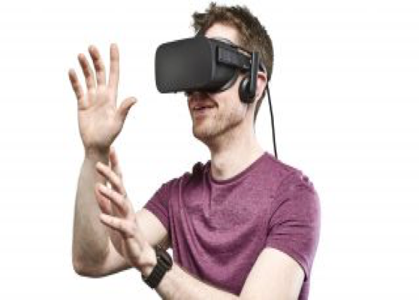

Introduction to communication of design
Lecture 1 (29/09/17)
Pocket Profiles:- #ixdbelfast
- Brian Eno
- @uxbelfast
- Vaugh Oliver
- Net Magazine
- Russell Mills
“Study the past if you define the future”-Confucius
01. Project: Type Specimen Poster (Deadline 12/09/17)
This week we were asked to begin our first project. We have been given a list of font names and have to choose one. I have chosen to look at either Bodoni or Garamond to begin the research for my poster. (A3 420 x 297)mm.
02. TumblrWe have also been asked to begin uploading our work each week to our Tumblr site.
Wilson Miner -When We Build (reflection of video)
I found this video to be very inspiring as someone with a keen interest in design. Miner starts off with the quote “They are just tools that fulfil a need and take us where we want to go”. This quote has a real truth behind it as with everything we design it is shaping our future. Marshall McLuhan said “We shape our tools, and therefore our tools shape us”. The things that we create are creating a new environment around us and by introducing and designing new things gives us a new outlook into society.
He says we must ask ourselves ‘What do we want that environment to feel like?’ so we should design based on what we want the future to become. Miner says as designers we take a lot of information for granted because we’ve already learnt it but it’s not enough to rely on what we know or what other people know. He says that if the environment is constantly changing then we need to be constantly learning from it.
‘We get to make things, something small but certainly meaningful’
I found this quote to be particularly inspiring. When it comes to design some of the best seem so simple, for example Apple. All of Apples products are so simple and clean looking but they have created such an impact on the world. So by saying that we make something small but certainly meaningful is very true and allows us to see that even the smallest of ideas can be the ones that create the biggest impact.
Markdown Notes
Plain text - basic text you can transfer across all sorts of platforms. A file that includes only text and no additional formats. Its portable, flexible and ubiquitous.
Formatting and Markdown - markdown is a text-to-HTML conversion tool for web-writers. Allows you to write using an easy-to-read.
Heading -- h1
- h2
- h3
Paragraphs - p This is a paragraph /p
Brackets - plain text editor
Use .md for markdown files e.g. girona.md when saving
Caves to Kells
Lecture 2 (06/10/17)
 Pocket Profiles:- Paddy Donnelly ‘Lefft'
- ‘Little Thunder’
- ‘Roco and Miley’
- Lee Munroe
- THINKING THROUGH DESIGN
Today we focused on the ‘Golden Ratio’ and how it is used by architects, designs, throughout nature etc.
Christopher Murphy - Contrast Through ScaleThis article was interesting as it discusses the various ways you can use contrast through the likes of scale, weight, case, colour etc.
GitHub Terminology
Gutenberg and Beyond
Lecture 3 (13/10/17)
 Pocket profiles:
Pocket profiles:
- Jakob Nielson (@NNgroup)
- Sarah Parmenter (@sazzy)
- Tim Brown (@timbrown)
- Typekit
- Google Fonts
This week we looked at the impact printing presses had in the western world and how they influenced them.
Designers discussed in todays’ lecture:
- Erik Spiekermann - “Type is the clothing for words”
- Johannes Gutenberg - ‘Revisionary Inventor’
- Albert Dürer
- Eric Gill
- Max Medinger
- Jessica Hische
- Marian Bantjes
- Si Scott
- Stefan Sagmeister
Reading for this week
A Century of Change
Lecture 4 (20/10/17)
Announcements : Allstate Fringe Event 9th November @6-7.30pm
Pixel Pioneers : Una Kravets / Dan Cederholm / Sara Soueidan
Photograph
Moving Pictures
The Industrial Revolution Changes Everything
Advent of Graphic Design
Japonism
Master and Apprentice
Arts and Crafts Movement
Art Nouveau
The Glasgow School
Vienna Succession
Expressionism
The Influence of Modern Art
Lecture 5 (27/10/17)
 Pocket Profiles:Cubism
Plakastil
WW1
Futurism
Contemporary Approaches
Surrealism
Art Deco
Edward Johnston (1868-1940)
Revolution and the Bauhaus
Lecture 6 3/11//17
 Pocket Profiles:James Victore
De Stijl
A Design Revolution
El Lissitzky
Alexander Rodchenko
Gustav Klutsis
Peter Saville
Walter Gropius
Lyonel Feiniger
Johannes Itten 1888-1967
László Moholy-Nagy 1895-1946
Josef Albers 1888-1976
Paul Klee 1879-1940
Oskar Schlemmer 1888-1943
Wassily Kandinsky 1866-1944
Herbert Bayer 1900-1985
WW1 and Modernism In the US
Lecture 7 (10/11/17)
 Pocket Profiles:What is modernism?
Jan Tschihold 1902-1974
“Degenerate Art”
HFG ULM
OTL Aicher 1922-1991
Max Bill
Herbert Bayer 1900-1985
The Americans
Herbert Matter 1907-1984
Paul Rand 1914-1996
Saul Bass 1920-1996
Pop Art
Pop art flourished in the Uk in the 1960s. well known pop art artists are Andy Warhol, Peter Hamilton, Lichtenstein etc. Pop art was used a lot for comic books.
Milton Glaser b.1929
The International Typographic Style
Lecture 8 (17/11/17)
The Magnificent 7
Jan Tschihold 1902-1974
Ernst Keller 1891-1968
Théo Ballmer 1902-1965]
Josef Müller-Brockmann 1914-1996
Beethoven poster (swiss style)
Adrian Frutiger 1928-2015
Emil Ruder 1914 - 1970
Armin Hoffmann b.1920
Eric Gill 1882-1940
The Swiss Style Today
Post Modernism
Lecture 9 24/11/17
The Rise of the Machines
Lecture 10 (1/12/17
) Paula Scher b.1948
Alan Fletcher 1931-2006
Tibor Kalman 1949-1999
HipGnosis 1968-1983
Desktop Publishing
Emigre Magazine 1984-2005
The Designers republic
Why not associates
Hillman Curtis 1961-2012
The Here and Now
Lecture (11 8/12/17)
Interaction Futures
Lecture 12 (15/12/17)
“The future is already here, it’s just not evenly distributed”-William Gibson